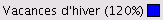
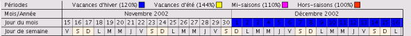
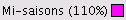
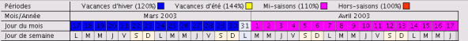
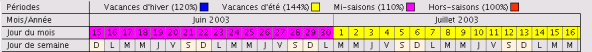
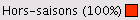
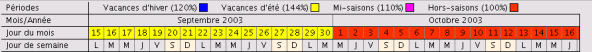
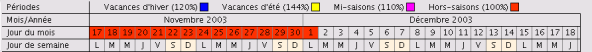

La ligne Périodes de la colonne d'en-têtes de la Vue du Plan d'occupation, permet d'afficher les différentes périodes configurées dans le Menu de Configuration des Tarifs/Périodes.
Les attributs Nom, Majoration et Couleur représentent la légende des périodes affichées dans la ligne Jour du mois du Calendrier.Affichage des périodes :
Période de début de  - Figure 1

Figure 1
Période de fin de et de début de  - Figure 2

Figure 2
Période de fin de et de début de - Figure 3

Figure 3
Période de fin de et de début de  - Figure 4

Figure 4
Période de fin de - Figure 5

Figure 5